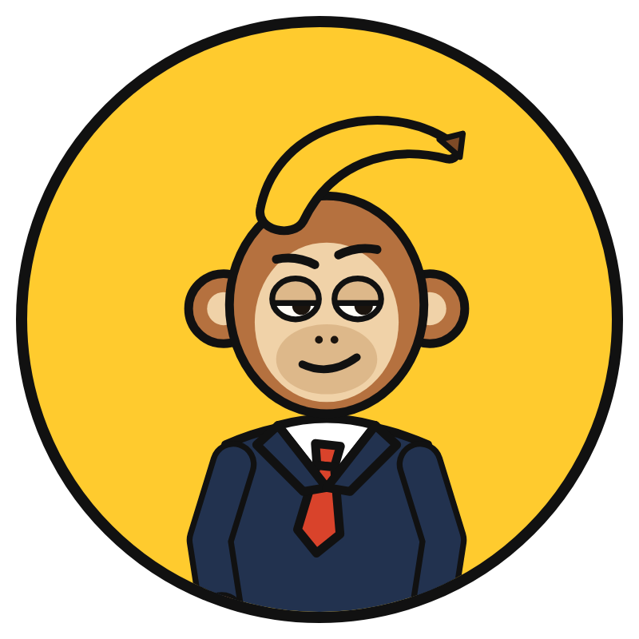

MONO
CON DATOS
La actualidad argentina, explicada con datos.
Un mono economista explica en simple un tema de actualidad argentina por video: economía, consumo, política pública, tecnología y vida cotidiana. Cada video parte de una noticia o pregunta de la semana, defiende una tesis propia y lleva las fuentes de cada dato en la descripción.
El personaje y los gráficos son propios. La narración usa una voz sintética en español argentino. Contenido informativo para público adulto; no es asesoramiento financiero.